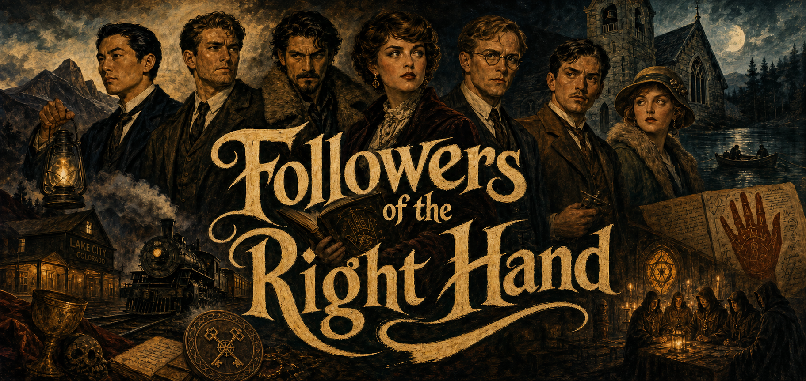

FRH New Player Packet
Followers of the Right Hand
A 1923 supernatural investigation campaign about strange mysteries, capable investigators, dangerous knowledge, and the dignity of trying to do real good in a haunted world.

What Kind of Game This Is
FRH is a tabletop role-playing campaign set in America in 1923. The investigators are members of a small, half-restored occult organization trying to determine whether strange reports are fraud, panic, human cruelty, or something genuinely supernatural. Some sessions turn on research, witness interviews, old records, class tensions, church politics, and travel. Some turn on relics, dream incursions, hidden societies, compromised allies, and things that do not obey ordinary rules. Most turn on people trying to make sense of too much at once.
The game is dangerous, but danger is not the main appeal. The appeal is getting to play a capable, unusual person whose choices matter. FRH is at its best when investigators bring different skills, different philosophies, and different wounds into the same mystery and discover that the world is stranger, older, and more connected than it first appeared.
Why It Is Fun
Investigation With Teeth
You get to chase rumors, examine artifacts, test theories, notice patterns, and discover what kind of thing you are actually dealing with before anyone else does.
Competence That Matters
Research, law, history, medicine, occult knowledge, fieldcraft, charm, and practical nerve all have real weight here. Knowing how to ask the right question can matter as much as carrying a gun.
Strange Team Chemistry
FRH works best when unusual investigators have to trust, doubt, protect, and argue with one another while the case keeps moving.
A World Worth Entering
This is not an empty horror sandbox. It is a social world with history, class, work, institutions, rumors, travel, and real places that become more vivid the stranger they get.
What FRH Is Not
It is not a game about near-helpless people being ground down for sport. It is not a brightly lit superhero campaign where danger is mostly cosmetic. It lives in the territory between those two: capable people under pressure, acting inside a structure larger than they fully understand.